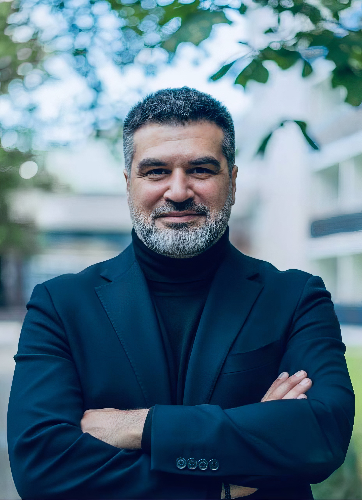
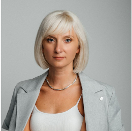

Три мастера, три оптики — собранные в одну сильную работу.
Ни один из этих треков по отдельности не даёт того сдвига, который мы видим. Сила формата — в их сочетании.

Предприниматель, методолог и фасилитатор. Помогает увидеть себя как систему: выделить суть, цель года, точки роста, риски и маршрут.
В программе отвечает за проектную логику, сборку личной карты и перевод инсайтов в понятные действия.

Эксперт по энергоменеджменту, эмоциональному интеллекту и телесным практикам. Помогает увидеть реальные источники энергии, дефициты и способы вернуть живость и устойчивость.
В программе отвечает за работу с состоянием, телом, проживанием и мягкую внутреннюю перестройку.

Держит физическую среду программы: дом, ритм дня, выезды и переходы. То, что обычно остаётся невидимым — и что критично для качества погружения.
В программе отвечает за то, чтобы пространство работало на участников, а не наоборот.